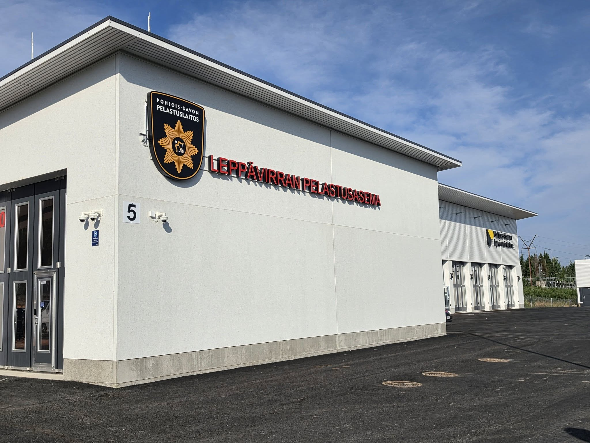
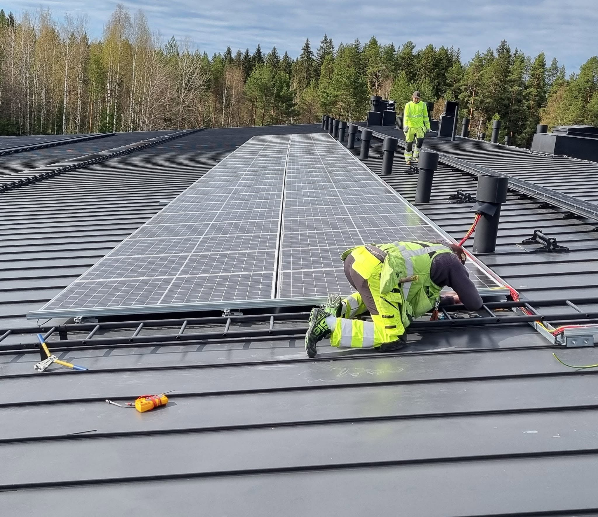

Sähköurakointi
Sähköasennukset uudis- ja saneerauskohteisiin, sähkönjakelu, keskukset, kaapelointi ja valaistus. Kokonaisuudet suunnitellaan ja toteutetaan kohteen vaatimusten mukaan.
JOB Kiinteistötekniikka Oy Oravikoski, Savo
Suunnittelusta toteutukseen.
Urakointi, asennukset, korjaukset ja kunnossapito yhdeltä tekniseltä toimijalta.
Osaaminen
Neljä teknistä kokonaisuutta. Yksi yhteyshenkilö ja vastuu sovitusta työstä.
Sähköasennukset uudis- ja saneerauskohteisiin, sähkönjakelu, keskukset, kaapelointi ja valaistus. Kokonaisuudet suunnitellaan ja toteutetaan kohteen vaatimusten mukaan.
Vikakorjaukset, sovitut huollot ja kiinteistöjen sähkötekninen kunnossapito.
Tele- ja tietoverkot, paloilmoittimet, kameravalvonta ja kulunvalvonta.
Kylmälaitteiden ja lämpöpumppujen asennukset Tukesin asennusoikeuden mukaisesti.
Työkokonaisuudet
JOB yhdistää toteutuksen, työnohjauksen, käyttöönoton ja kunnossapidon selkeäksi kokonaisuudeksi.
Keskukset, kaapelointi, valaistus ja kiinteistöjen sähkötekniset kokonaisuudet.
Kiinteistöjen sisäverkot, tietoliikennekaapelointi, kuitu-, antenni- ja teleasennukset.
Paloilmoitinjärjestelmät, kameravalvonta ja kulunvalvonta tarvittavien lupien mukaisesti.
Mittaukset, tarkastukset ja työn laajuuteen kuuluva luovutusdokumentaatio.
Korjaukset, huollot ja jatkuvuutta tukeva ylläpito yrityksille ja kiinteistöille.
Kylmälaite- ja lämpöpumppuasennukset osana kiinteistön teknistä kokonaisuutta.

Asiakkaat
Teollisuuden, liike- ja toimitilakiinteistöjen sähkö-, turva- ja kiinteistötekniset työt. Työ voidaan rajata yksittäisestä asennuksesta johdettuun urakkakokonaisuuteen ja myöhempään kunnossapitoon.
Kuntien ja julkisyhteisöjen kohteet sovitulla dokumentaatiolla, tarkastuksilla ja tilaajavastuutiedoilla.
Omakotitalojen ja vapaa-ajan asuntojen sähkö-, tele- ja lämpöpumpputyöt suoralla yhteydellä tekijään.
Teollisuus ja vaativat kohteet

Teollisuus-, rakennus- ja datakeskusympäristöissä JOB toteuttaa sovitun sähkö- tai kiinteistöteknisen työkokonaisuuden omalla henkilöstöllä ja omalla työnjohdolla.
Laajuus, aikataulu, työmaan rajapinnat ja dokumentointi käydään läpi ennen toteutusta. Näin vastuu pysyy ymmärrettävänä myös osana suurempaa projektiorganisaatiota.
Luvat ja pätevyydet
Viranomaisluvat, pätevyys, tilaajavastuutiedot ja toimialajäsenyydet on ryhmitelty sen mukaan, mitä ne ovat.
Savosta käsin toteutettavaa sähkö- ja kiinteistötekniikkaa.
Myllärintie 5Perustettu 2009
Y-tunnus 2295210-9
Myllärintie 5, 71470 Oravikoski
Oravikoskella perustettu tekninen urakoitsija. Sähkö-, tele-, turva- ja kylmätyöt sekä huolto omalla henkilöstöllä ja työnjohdolla.
Suora yhteys